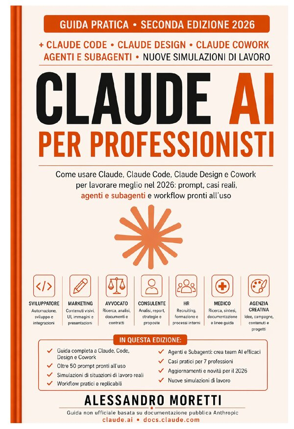

Come usare Claude, Claude Code, Claude Design e Cowork per lavorare meglio nel 2026 — prompt, casi reali e workflow pronti all'uso.

👆 Clicca per sfogliare le prime pagine
Contenuto del libro
Padroneggia il modello Anthropic con prompt precisi per ogni task professionale — dalla chat quotidiana agli agenti autonomi.
L'agente AI nel tuo terminale: legge la codebase, modifica file, gestisce git. Per sviluppatori e non.
Critique, handoff, design system e UX copy con il tool AI dedicato alla creatività professionale.
Automatizza task aziendali, gestisci file e collabora con agenti AI nel tuo flusso di lavoro quotidiano senza toccare un terminale.
Dentro il libro
Lascia la tua email e ricevi subito il materiale bonus esclusivo riservato ai lettori di Claude AI per Professionisti.
Nessuno spam. Solo contenuti utili su Claude AI. Disiscrizione in un click.
Cosa dicono i lettori
"Finalmente un libro pratico su Claude. Zero teoria inutile, solo casi reali e workflow che ho iniziato ad applicare dal primo capitolo. In una settimana ho già recuperato il doppio del tempo."
"Uso Claude da mesi ma questo libro mi ha aperto un mondo. La sezione su Claude Code da sola vale 10 volte il prezzo. Consiglio a qualsiasi professionista digitale."
"Spiega tutto con un linguaggio chiaro, concreto, senza fronzoli. Cowork e i workflow pronti all'uso mi hanno cambiato la giornata lavorativa."
Domande frequenti
A professionisti, manager, consulenti, freelance e imprenditori italiani che vogliono usare Claude AI per lavorare meglio nel 2026, anche senza background tecnico.
Prompt engineering avanzato, automazioni con Claude Code, Claude Design per creativi, Cowork per la gestione aziendale — con 60 casi reali e workflow pronti all'uso.
No. Il libro è scritto in modo accessibile e progressivo: si parte dalle basi di Claude e si arriva a workflow avanzati, sempre con esempi concreti applicabili immediatamente.
Sì. Claude è sviluppato da Anthropic con Constitutional AI: sicurezza e ragionamento etico integrati nell'architettura, non aggiunti in seguito. Il libro spiega le differenze pratiche per chi lavora ogni giorno.
Su Amazon.it in versione Kindle e cartacea.
Pronto a lavorare meglio nel 2026?
Già +1.500 professionisti italiani stanno usando Claude AI grazie a questo libro. Unisciti a loro.
🛒 Acquista su Amazon.it